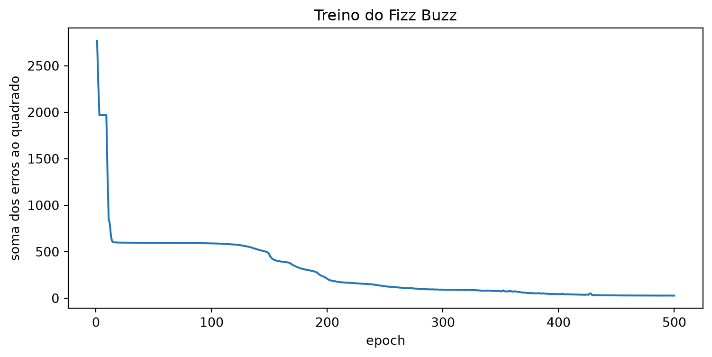

from scratch.linear_algebra import Vector
def fizz_buzz_encode(x: int) -> Vector:
if x % 15 == 0:
return [0, 0, 0, 1]
elif x % 5 == 0:
return [0, 0, 1, 0]
elif x % 3 == 0:
return [0, 1, 0, 0]
else:
return [1, 0, 0, 0]
assert fizz_buzz_encode(2) == [1, 0, 0, 0]
assert fizz_buzz_encode(6) == [0, 1, 0, 0]
assert fizz_buzz_encode(10) == [0, 0, 1, 0]
assert fizz_buzz_encode(30) == [0, 0, 0, 1]Exemplo: Fizz Buzz
Nota
Esta seção corresponde a Example: Fizz Buzz, do capítulo 18 de Grus (2019).
O vice-presidente de Engenharia da DataSciencester quer entrevistar candidatos técnicos pedindo que resolvam o “Fizz Buzz”, o exercício de programação mais surrado que existe:
Imprima os números de 1 a 100, com estas exceções: se o número for divisível por 3, imprima
"fizz"; se for divisível por 5, imprima"buzz"; e se for divisível por 15, imprima"fizzbuzz".
Ele está convencido de que quem resolve isso é um programador excepcional. Você acha que o problema é tão simples que uma rede neural daria conta.
O exercício, como está enunciado, transforma um inteiro numa string. Redes neurais recebem vetores e devolvem vetores. Então o primeiro trabalho — e o mais interessante desta seção — é reformular o problema como um problema de vetores.
Codificando a saída
Essa parte é fácil. Há quatro respostas possíveis, então a saída vira um vetor de quatro posições, com um 1 na posição da resposta certa:
A ordem dos testes importa: 15 é divisível por 3 e por 5, então o caso do 15 precisa vir antes dos outros dois. É a mesma armadilha do exercício original, e ela sobreviveu à mudança de representação.
Codificando a entrada
Essa parte é menos óbvia, e é onde está a lição.
A tentação é usar um vetor de uma posição só, contendo o próprio número. Não faça isso, por duas razões. A primeira é que uma entrada única codifica uma intensidade: ela diz que 2 é o dobro de 1, e que 4 é o dobro de 2 — informação verdadeira e completamente irrelevante para este problema. A segunda é que, com uma entrada só, a camada escondida não teria matéria-prima para calcular atributo interessante nenhum.
O que funciona razoavelmente bem — e o livro-texto é honesto ao dizer que isso não era óbvio nem para ele — é converter cada número para a sua representação binária:
from typing import List
def binary_encode(x: int) -> Vector:
binary: List[float] = []
for i in range(10):
binary.append(x % 2)
x = x // 2
return binary
# 1 2 4 8 16 32 64 128 256 512
assert binary_encode(0) == [0, 0, 0, 0, 0, 0, 0, 0, 0, 0]
assert binary_encode(1) == [1, 0, 0, 0, 0, 0, 0, 0, 0, 0]
assert binary_encode(10) == [0, 1, 0, 1, 0, 0, 0, 0, 0, 0]
assert binary_encode(101) == [1, 0, 1, 0, 0, 1, 1, 0, 0, 0]
assert binary_encode(999) == [1, 1, 1, 0, 0, 1, 1, 1, 1, 1]Dez bits, do menos significativo para o mais significativo, o que dá conta dos números de 0 a 1023.
ImportanteNinguém vai contar à rede o que é divisibilidade
Vale registrar o que não está sendo dado a ela, porque é isso que torna o resultado desta seção interessante em vez de trivial.
A rede recebe dez zeros e uns. Ela não recebe o número, não recebe o resto da divisão por 3, não recebe nenhuma dica de que existe algo chamado divisibilidade. E a divisibilidade por 3 não é um bit: enquanto “par” é simplesmente o primeiro bit, “múltiplo de 3” depende de todos eles de um jeito torto — como \(2^k \bmod 3\) alterna entre 1 e 2, a divisibilidade por 3 sai da soma alternada dos bits. A de 5 é pior: \(2^k \bmod 5\) percorre o ciclo \(1, 2, 4, 3\) e volta, então ela depende da posição de cada bit módulo 4.
Existe regra, e ela é composta. Se a rede acertar, terá sido por ter construído sozinha alguma coisa que faz esse papel.
Treino e teste
O objetivo é produzir as respostas para os números de 1 a 100. Treinar nesses números seria trapaça — o Capítulo 8 chamaria isso de avaliar o modelo no próprio conjunto de treino, que é a forma mais rápida de se enganar sobre a qualidade dele. Então treinamos nos números de 101 a 1023, o maior que cabe em dez bits:
xs = [binary_encode(n) for n in range(101, 1024)]
ys = [fizz_buzz_encode(n) for n in range(101, 1024)]
len(xs)923São 923 exemplos de treino e 100 de teste, sem nenhuma sobreposição. É a separação mais limpa que este livro faz: não há embaralhamento, não há semente, não há como um número vazar de um lado para o outro.
A rede tem 10 neurônios de entrada (a dimensão dos vetores de entrada), 4 de saída (a dimensão dos alvos) e 25 escondidos — número escolhido por tentativa, guardado numa variável para ser fácil de mexer:
import random
random.seed(0)
NUM_HIDDEN = 25
network = [
# camada escondida: 10 entradas -> NUM_HIDDEN saídas
[[random.random() for _ in range(10 + 1)] for _ in range(NUM_HIDDEN)],
# camada de saída: NUM_HIDDEN entradas -> 4 saídas
[[random.random() for _ in range(NUM_HIDDEN + 1)] for _ in range(4)]
]
sum(len(neuron) for layer in network for neuron in layer)379São 379 pesos ao todo — \(25 \times 11\) na camada escondida mais \(4 \times 26\) na de saída. Compare com os 4 coeficientes da regressão múltipla do Capítulo 12, que se liam um a um em português.
Treinando
Este problema é bem maior que o XOR, e há muito mais coisa que pode dar errado, então vamos acompanhar a perda a cada epoch e guardá-la para desenhar depois. Também vamos parar em alguns epochs escolhidos para ver o que a rede está respondendo, e não só o quanto ela está errando:
from collections import Counter
from scratch.neural_networks import feed_forward, sqerror_gradients, argmax
from scratch.gradient_descent import gradient_step
from scratch.linear_algebra import squared_distance
import tqdm
learning_rate = 1.0
perdas = []
marcos = [5, 20, 50, 100, 150, 500]
diagnostico = {}
with tqdm.trange(500) as t:
for epoch in t:
epoch_loss = 0.0
for x, y in zip(xs, ys):
predicted = feed_forward(network, x)[-1]
epoch_loss += squared_distance(predicted, y)
gradients = sqerror_gradients(network, x, y)
# um passo de gradiente para cada neurônio de cada camada
network = [[gradient_step(neuron, grad, -learning_rate)
for neuron, grad in zip(layer, layer_grad)]
for layer, layer_grad in zip(network, gradients)]
perdas.append(epoch_loss)
t.set_description(f"fizz buzz (perda: {epoch_loss:.2f})")
if epoch + 1 in marcos:
previstos = [argmax(feed_forward(network, x)[-1]) for x in xs]
acertos = sum(1 for p, y in zip(previstos, ys) if p == argmax(y))
diagnostico[epoch + 1] = (Counter(previstos), acertos)Isso leva cerca de um minuto — 500 epochs sobre 923 exemplos, com uma passada para a frente e uma para trás em cada um, tudo em Python puro sobre listas. É de longe o chunk mais caro deste capítulo, e o preço é o mesmo de sempre: transparência.
Uma ressalva sobre o epoch_loss: como o treino é estocástico, os pesos mudam a cada um dos 923 exemplos, e a soma acumulada mistura previsões de redes ligeiramente diferentes. Ela não é a perda de uma rede fixa, e sim um resumo do epoch — bom para acompanhar a tendência, e é também o que produz os pequenos solavancos no fim da curva abaixo, quando a queda já é menor que essa mistura.
A perda caiu?

Caiu — mas não do jeito liso que a palavra “convergir” sugere. Há uma queda rápida nos primeiros epochs, depois um trecho plano e longo, e só bem mais tarde a descida de verdade. Esse platô não é um detalhe cosmético do gráfico; ele é a parte mais instrutiva do treino, e dá para ver exatamente o que a rede está fazendo enquanto está parada nele:
rotulos = ["o próprio número", "fizz", "buzz", "fizzbuzz"]
for epoch in marcos:
contagem, acertos = diagnostico[epoch]
dist = " ".join(f"{rotulos[i]}: {contagem.get(i, 0)}" for i in range(4))
print(f"epoch {epoch:3d} acertos no treino: {acertos:3d}/923 {dist}")epoch 5 acertos no treino: 199/923 o próprio número: 0 fizz: 584 buzz: 339 fizzbuzz: 0
epoch 20 acertos no treino: 493/923 o próprio número: 923 fizz: 0 buzz: 0 fizzbuzz: 0
epoch 50 acertos no treino: 493/923 o próprio número: 923 fizz: 0 buzz: 0 fizzbuzz: 0
epoch 100 acertos no treino: 494/923 o próprio número: 913 fizz: 10 buzz: 0 fizzbuzz: 0
epoch 150 acertos no treino: 632/923 o próprio número: 733 fizz: 123 buzz: 60 fizzbuzz: 7
epoch 500 acertos no treino: 903/923 o próprio número: 490 fizz: 254 buzz: 120 fizzbuzz: 59Nos epochs 20 e 50, a rede responde “o próprio número” para os 923 exemplos, sem exceção. Ela não aprendeu nada sobre divisibilidade: descobriu apenas que essa é a resposta mais comum, e passou a dá-la sempre.
AvisoO platô é o palpite preguiçoso
Responder sempre a classe mais frequente é o classificador-base do Capítulo 8: aquele contra o qual todo modelo deve ser comparado antes de se comemorar qualquer coisa. Nos dados de treino ele acerta 493 dos 923 números, ou 53,4%. E esse é exatamente o patamar em que a rede fica estacionada por dezenas de epochs.
Repare que a perda não fica exatamente parada ali: ela continua caindo, só que na casa do décimo por epoch — entre os epochs 25 e 100 ela vai de cerca de 597 para 589, o que no gráfico é indistinguível de uma reta horizontal. O gradiente existe e aponta para o lado certo; ele é apenas minúsculo, porque o terreno é quase plano. A rede sai dali por teimosia, não por esperteza: continuamos empurrando por dezenas de epochs até a inclinação voltar.
Isso tem uma consequência prática que a caixa “Na prática” no fim desta seção mostra medida: um critério de parada razoável interrompe o treino exatamente aqui, e devolve o palpite preguiçoso como se fosse o resultado. Quem só chama .fit() recebe 53% e um modelo que parece treinado.
Resolvendo o problema
A rede devolve um vetor de quatro números, e queremos uma resposta só. A ponte é o argmax, o índice do maior valor:
assert argmax([0, -1]) == 0 # o item 0 é o maior
assert argmax([-1, 0]) == 1 # o item 1 é o maior
assert argmax([-1, 10, 5, 20, -3]) == 3 # o item 3 é o maiorCom ele, finalmente:
num_correct = 0
erros = []
for n in range(1, 101):
x = binary_encode(n)
predicted = argmax(feed_forward(network, x)[-1])
actual = argmax(fizz_buzz_encode(n))
labels = [str(n), "fizz", "buzz", "fizzbuzz"]
if predicted == actual:
num_correct += 1
else:
erros.append((n, labels[predicted], labels[actual]))
print(num_correct, "/", 100)
print("erros:", erros)96 / 100
erros: [(4, 'fizz', '4'), (34, 'fizz', '34'), (70, '70', 'buzz'), (100, '100', 'buzz')]96 acertos em 100, em números que a rede nunca viu. O classificador-base do platô teria feito 53 — há 53 números entre 1 e 100 que não são múltiplos de 3 nem de 5 —, então os 96 são ganho real sobre o palpite preguiçoso, não sobre o vazio.
E não há sinal de sobreajuste: no conjunto de treino a rede terminou com 903 acertos em 923, isto é, 97,8%, contra 96% no teste. Menos de dois pontos separam os dois números.
Repare no que está sendo lido aí, porque é fácil ler a coisa errada. Não é o acerto no treino: acertar muito — ou até tudo — no próprio treino não é, sozinho, sinal de nada, nem bom nem ruim. O que se lê é a queda do treino para o teste — aqui, 1,8 ponto.
E é a queda, não a distância. A seção 14.6 tem os dois casos lado a lado: a árvore sem poda acertava 99,7% dos exemplos com que se construiu e caía 17,3 pontos em dados novos, para 82,4%; a árvore de profundidade 2, pior no treino com 85,0%, subia 15,0 pontos e acertava 100% do teste. As duas diferenças têm quase o mesmo tamanho e sentidos opostos, de modo que a distância entre os dois números não distingue os dois casos — o sinal distingue. E o modelo com o melhor número de treino era o pior dos dois.
Olhando os erros de perto
Vale olhar os erros de perto, porque eles não são todos do mesmo tipo:
for n in [4, 70, 15]:
saida = feed_forward(network, binary_encode(n))[-1]
valores = ", ".join(f"{v:.4f}" for v in saida)
print(f"n = {n:3d} saída bruta [{valores}] soma = {sum(saida):.4f}")n = 4 saída bruta [0.3389, 0.4649, 0.2731, 0.0000] soma = 1.0769
n = 70 saída bruta [0.9539, 0.0000, 0.0315, 0.0000] soma = 0.9854
n = 15 saída bruta [0.0002, 0.0003, 0.0001, 0.9056] soma = 0.9062Para \(n = 4\), a rede está genuinamente indecisa: as três primeiras saídas são 0,3389, 0,4649 e 0,2731, e “fizz” vence por pouco. É um erro de quem não sabe. Para \(n = 70\), o quadro é outro: a saída “o próprio número” vale 0,9539 contra 0,0315 de “buzz”. Aqui a rede está confiantemente errada, que é sempre o pior tipo de erro. O terceiro caso, \(n = 15\), é o contraste que fecha o argumento: 0,9056 na posição de “fizzbuzz” e praticamente zero nas outras três — confiante e certa. Coloque os vetores de \(n = 70\) e \(n = 15\) lado a lado e nada na forma deles distingue um do outro. Só sabemos qual é qual porque temos o gabarito.
AvisoEstes quatro números não são uma distribuição de probabilidade
Olhe a coluna da soma. Para \(n = 4\) ela dá 1,0769; para \(n = 15\), 0,9062. Não é arredondamento: nada na rede força as quatro saídas a somarem 1.
Cada neurônio de saída tem a sua própria sigmoide e produz um número em \([0, 1]\) independentemente dos outros. Quatro números em \([0, 1]\) não formam uma distribuição só porque estão lado a lado. Ler o 0,9539 do \(n = 70\) como “95% de confiança” seria inventar uma garantia que o modelo não dá.
A correção existe e tem nome — a função softmax, que normaliza as quatro saídas para que somem 1, acompanhada da perda de entropia cruzada em vez do erro quadrático. É o que o Capítulo 16 constrói, e é também o que a biblioteca faz por padrão num problema de classificação com mais de duas classes.
O que a rede aprendeu, e por que não dá para saber
O vice-presidente de Engenharia, diante da evidência, cede e troca o desafio da entrevista por “inverta uma árvore binária”. A piada é do livro-texto e é boa, mas ela não é a lição.
A lição é que a rede construiu, a partir de dez bits, alguma coisa que faz o papel da divisibilidade por 3 e por 5 — sem que ninguém lhe dissesse que divisibilidade existe. Ela viu 923 pares (padrão de bits, resposta) e montou, na camada escondida, alguma combinação desses bits que funciona — não necessariamente a soma alternada nem o ciclo módulo 4 de que a seção falou no início, apenas algo que acerta 96 dos 100.
“Faz o papel”, e não “é”: quem soubesse a regra não erraria 70 e 100, que são múltiplos de 5 como tantos outros que ela acertou, nem chutaria “fizz” em 4 e em 34. O que a rede tem é uma aproximação boa em 96 dos 100 casos que nunca viu — o que já é muito mais do que o palpite preguiçoso, e ainda assim não é a regra.
E aqui o capítulo cobra o preço que o índice anunciou. A seção 15.3 abriu os pesos da rede do XOR e leu, dentro deles, um OU e um E. Vamos fazer exatamente a mesma coisa aqui, com dois dos 25 neurônios escondidos:
for i in [0, 13]:
pesos = ", ".join(f"{w:6.2f}" for w in network[0][i])
print(f"escondido {i:2d} [{pesos}]")escondido 0 [ -2.78, -5.59, -11.34, -9.80, -2.69, -6.25, 3.05, -19.00, -2.73, -5.97, 15.91]
escondido 13 [ -2.17, -3.63, -14.70, 3.28, -2.23, -3.88, 1.93, 2.95, -2.29, -3.73, 8.06]Onze números cada: os dez primeiros são os pesos dos dez bits, do menos significativo ao mais significativo, e o último é o viés. É a mesma leitura que na seção anterior devolveu “OU” e “E” — mesma estrutura de dados, mesmo código, e agora sem devolver frase nenhuma.
Quem procurar com afinco acha fragmentos. Nos dois vetores acima, os pesos dos bits 0, 4 e 8 saem quase iguais entre si: \(-2{,}78\), \(-2{,}69\) e \(-2{,}73\) no primeiro; \(-2{,}17\), \(-2{,}23\) e \(-2{,}29\) no segundo, enquanto os outros sete pesos de cada vetor se espalham por quase duas dezenas de unidades. Isso não é coincidência — e dá para medir o quanto não é.
O que dá para achar nos pesos, se você souber a pergunta
Comece pela aritmética, que é curta. Fizz buzz depende só de \(n \bmod 15\), e o resíduo com que cada bit contribui para essa conta é \(2^k \bmod 15\) — que cicla com período 4: \(1, 2, 4, 8, 1, 2, 4, 8, 1, 2\). É a combinação dos dois ciclos da caixa Ninguém vai contar à rede o que é divisibilidade: o de período 2 da divisão por 3 e o de período 4 da divisão por 5. Consequência: para esta tarefa, os bits 0, 4 e 8 carregam exatamente a mesma informação. Trocar um pelo outro não muda a resposta certa. O mesmo vale para os bits 1, 5 e 9, para os bits 2 e 6, e para os bits 3 e 7.
A rede não sabe disso. Mas, se por acaso tiver chegado lá sozinha, os 25 neurônios escondidos vão dar pesos parecidos aos bits de um mesmo grupo — e isso é uma pergunta que se responde com uma conta. Para cada par de bits, a distância média entre os pesos que os 25 neurônios lhes dão, expressa como fração da escala típica de um peso:
oculta = network[0]
def coluna(k):
"""Os 25 pesos que os neurônios escondidos dão ao bit k."""
return [neuronio[k] for neuronio in oculta]
def distancia(j, k):
"""Distância média, neurônio a neurônio, entre os pesos dos bits j e k."""
return sum(abs(a - b) for a, b in zip(coluna(j), coluna(k))) / NUM_HIDDEN
# escala típica de um peso, para as distâncias virarem fração dela
escala = sum(abs(w) for k in range(10) for w in coluna(k)) / (10 * NUM_HIDDEN)
# os bits se agrupam pelo resto que 2**k deixa na divisão por 15
grupos = {}
for k in range(10):
grupos.setdefault(2 ** k % 15, []).append(k)
print(f"escala típica de um peso: {escala:.2f}\n")
print("bits resíduo distância")
for r in sorted(grupos):
for i, j in enumerate(grupos[r]):
for k in grupos[r][i + 1:]:
print(f"{j}-{k} {r:5d} {100 * distancia(j, k) / escala:7.0f}%")
entre = [distancia(j, k) for j in range(10) for k in range(j + 1, 10)
if 2 ** j % 15 != 2 ** k % 15]
print(f"\nos {len(entre)} pares de resíduos diferentes: "
f"média {100 * sum(entre) / len(entre) / escala:.0f}%, "
f"de {100 * min(entre) / escala:.0f}% a {100 * max(entre) / escala:.0f}%")escala típica de um peso: 5.70
bits resíduo distância
0-4 1 2%
0-8 1 4%
4-8 1 3%
1-5 2 29%
1-9 2 31%
5-9 2 7%
2-6 4 95%
3-7 8 150%
os 37 pares de resíduos diferentes: média 138%, de 90% a 200%Um grupo salta da tabela. Os bits 0, 4 e 8 estão a 2%, 4% e 3% de distância entre si — o pior dos três pares fica mais de trinta vezes abaixo dos 138% que separam, em média, dois bits de resíduos diferentes. Ninguém contou à rede o que é divisibilidade, e ela terminou tratando como intercambiáveis exatamente os três bits que a teoria dos números diz que são intercambiáveis aqui.
E aí a história para de ser bonita, que é o que a torna interessante. No grupo seguinte, a rede achou metade: o par 5–9 fica a 7%, mas os pares com o bit 1 ficam a 29% e 31% — bem abaixo da referência, e ainda assim sete vezes acima do pior par do primeiro grupo. Os outros dois grupos ela não achou: 95% para o par 2–6 e 150% para o par 3–7 caem dentro da faixa que pares sem parentesco nenhum já ocupam, de 90% a 200%. Há pares de resíduos diferentes mais próximos entre si do que o par 2–6.
Uma das quatro simetrias com clareza, metade de outra, duas perdidas. É essa proporção que torna o achado crível: uma rede que tivesse encontrado as quatro seria uma anedota boa demais, e a primeira coisa a fazer com ela seria procurar o erro na medição. Esta é o que redes fazem — recuperam parte da estrutura do problema, do jeito irregular com que a descida do gradiente esbarra no que estava por perto.
Repare, por fim, no que isso não é. Não é interpretabilidade, e não é o mesmo que ler um coeficiente. Os pesos continuam ilegíveis um a um; nada mudou nos dois vetores impressos acima, e o que se descobriu não é como o neurônio combina os bits, só quais bits ele se recusa a distinguir. Foi preciso ter a hipótese antes de encontrar a evidência: sem saber que \(2^k \bmod 15\) tem período 4, não haveria o que medir, e a estrutura ficaria ali, invisível. É o inverso do que o Capítulo 12 oferece, onde o coeficiente já vem com o significado escrito nele.
Pergunte quais atributos a camada escondida inventou, e não há resposta.
São 25 vetores de 11 números cada. Nenhum deles corresponde a “é múltiplo de 3”, ou a “o terceiro bit está ligado”, ou a coisa alguma que se diga em português. O que a rede calcula está espalhado entre os 25, e a informação sobre divisibilidade por 3 não mora em nenhum neurônio específico — mora na combinação.
Esse é o fim do arco que atravessa o livro. O Capítulo 12 deu coeficientes que se leem um a um. O Capítulo 14 deu uma árvore que se percorre com o dedo, e cuja leitura é a justificativa da previsão. Aqui os parâmetros não significam nada sozinhos — e o modelo resolve um problema que nenhum dos dois resolveria.
Nenhum dos dois, e por motivos diferentes. Uma regressão sobre dez bits é uma soma ponderada de bits, e nenhuma soma ponderada de bits separa os múltiplos de 3: basta olhar 0, 1, 2 e 3, cujos dois primeiros bits são \([0,0]\), \([1,0]\), \([0,1]\) e \([1,1]\) — os dois múltiplos de 3 caem em cantos opostos do quadrado, que é exatamente a configuração que as quatro desigualdades da seção 15.1 provaram impossível. Uma árvore, com dez atributos binários, tem dez perguntas para fazer e no fundo delas há uma folha por padrão de bits: a profundidade 10 é memorização, e nenhum dos cem padrões de 1 a 100 apareceu no treino.
Poder de representação e interpretabilidade andam em direções opostas. Não é um defeito a ser consertado numa versão futura; é a troca que se faz ao escolher esta família de modelos. O que esta disciplina acrescenta é que você saiba que está fazendo a troca, e o que está entregando em cada direção.
O Capítulo 16 recebe essa rede e a desmonta em camadas que se compõem, com a softmax e a entropia cruzada da caixa acima no lugar das quatro sigmoides independentes — e aí o mesmo maquinário passa a caber num problema em que 25 neurônios escondidos não bastariam.
DicaNa prática:
scikit-learn
O mesmo experimento, com a biblioteca:
from sklearn.neural_network import MLPClassifier
X_treino = [binary_encode(n) for n in range(101, 1024)]
y_treino = [argmax(fizz_buzz_encode(n)) for n in range(101, 1024)]
X_teste = [binary_encode(n) for n in range(1, 101)]
y_teste = [argmax(fizz_buzz_encode(n)) for n in range(1, 101)]
rede = MLPClassifier(hidden_layer_sizes=(25,), activation='logistic',
max_iter=2000, random_state=0)
rede.fit(X_treino, y_treino)
rede.score(X_teste, y_teste)Essa configuração é a mais próxima da nossa: 25 neurônios escondidos, ativação logística. Rodando no container deste livro (scikit-learn 1.9), ela devolve 0,53 — e rede.n_iter_ mostra por quê: o treino parou na iteração 51.
Parou no platô. O MLPClassifier encerra quando a perda deixa de melhorar por n_iter_no_change=10 iterações seguidas, com tolerância tol=1e-4, e o trecho quase plano do gráfico acima satisfaz esse critério com folga. O modelo devolvido é o palpite preguiçoso: acerta 53 dos 100, exatamente o classificador-base. Nenhum aviso, nenhum erro — fit retorna, score devolve um número.
O nosso laço passou pelo platô porque não tinha critério de parada nenhum: ele roda 500 epochs e pronto. Uma decisão ingênua que, neste problema, acaba sendo a certa.
Trocando as escolhas, a biblioteca aprende. Duas configurações medidas:
| configuração | acerto no treino | acerto no teste | tempo |
|---|---|---|---|
(25,), logistic, adam (acima) |
0,534 | 0,530 | instantâneo |
(100,), relu, adam, max_iter=2000 |
1,000 | 0,860 | ~2 s |
(25,), logistic, solver='lbfgs' |
1,000 | 0,850 | ~0,4 s |
| a nossa rede | 0,978 | 0,960 | ~1 min |
Duas leituras honestas dessa tabela. A primeira: a biblioteca é uma a duas ordens de grandeza mais rápida, e isso é decisivo em qualquer problema real. A segunda: os 96% da nossa rede contra os 86% da melhor configuração testada não significam que o nosso código é melhor. São 100 números de teste, e a diferença de dez acertos cabe folgadamente dentro do ruído de escolher outra semente, outra ativação ou outro otimizador. O que a tabela mostra de fato é que a configuração muda o resultado de 53% para 86%, e que nada na interface avisa qual delas você escolheu.
Um último detalhe que fecha a caixa anterior: para um problema com mais de duas classes, o MLPClassifier usa softmax na saída e entropia cruzada como perda — verificável em rede.out_activation_ e rede.loss. Ele não faz o que fizemos aqui. Quatro sigmoides independentes treinadas com erro quadrático é a escolha do livro-texto, e é uma escolha datada; o Capítulo 16 constrói a alternativa moderna do zero.
Grus, Joel. 2019. Data Science from Scratch: First Principles with Python. 2nd ed. O’Reilly Media.